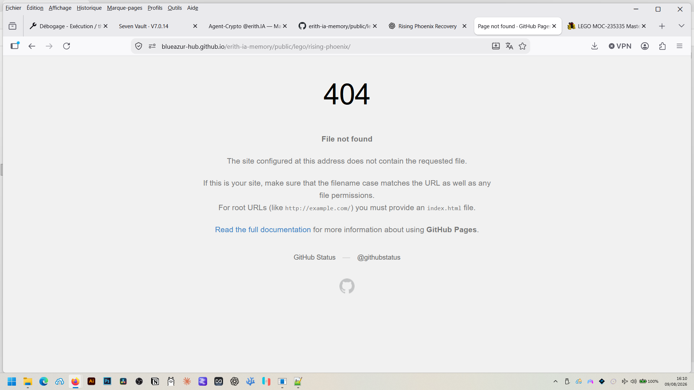

Level 01
Dragon Speeder
Configuration compacte de base, sans Temple ni propulsion arrière avancée.
Master Wu’s Mechanical Golden Dragon transformé en création personnelle complète : évolution physique, Temple, propulsion arrière avancée, reconstruction Studio et notice de montage de 150 pages.

Rising Phoenix raconte une évolution réelle en briques : essais, transformations, recherche de pièces, reconstruction, mise au point des modules, puis reproduction technique dans BrickLink Studio afin de produire une notice complète et publiable.
Le dragon change de proportions, de structure et de fonction au fil des reconstructions.
Le Temple de Master Wu devient un module narratif et fonctionnel intégré à la construction.
L’architecture arrière complète le profil mécanique de Rising Phoenix.
Le modèle physique est reconstruit numériquement pour vérifier sa logique de montage.
595 pièces, 354 étapes et une notice PDF de 150 pages destinée aux constructeurs.
Configuration compacte de base, sans Temple ni propulsion arrière avancée.
Le dragon reçoit le Temple et ses éléments de présentation et de rangement.
Configuration physique officielle la plus complète : Temple et propulsion arrière avancée réunis.
La partie Studio ne remplace pas le MOC physique : elle le documente. Le travail numérique sert à transformer une construction réelle en séquence de montage reproductible, contrôlée étape par étape.
La notice finale rassemble 595 pièces, 354 étapes et 150 pages de montage.